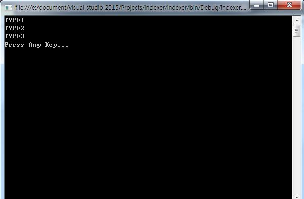
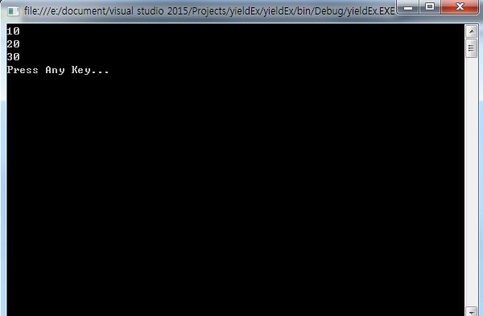

こんにちは。明月です。
今日はindexer(インデクサー)とyield(リファレンス)について勉強します。
indexerとyieldの場合は他の言語にはない文法です。なので少し理解が大変だと思われることもできるが以外に簡単だしよく理解して利用すればプログラム品質があがることにもできると思います。
indexer(インデクサー)
indexerはクラスを配列みたいに宣言するように使用するキーワードです。
class クラス名
{
アクセス修飾子 データタイプ this[データタイプ パラメタ名]
{
get
{
}
set
{
}
}
}
using System;
using System.Collections.Generic;
using System.Linq;
using System.Text;
using System.Threading.Tasks;
namespace indexer
{
public enum TYPE
{
Type1,
Type2,
Type3
}
public class IndexerEx
{
//インデクサー
public String this[TYPE index]
{
//返却するところ
get
{
//インデックス区分で返却値
switch (index)
{
case TYPE.Type1:
return "TYPE1";
case TYPE.Type2:
return "TYPE2";
case TYPE.Type3:
return "TYPE3";
}
return null;
}
//格納するところ
set
{
Console.WriteLine(value);
}
}
}
class Program
{
static void Main(string[] args)
{
IndexerEx test = new IndexerEx();
//配列みたいに使います。
Console.WriteLine(test[TYPE.Type1]);
Console.WriteLine(test[TYPE.Type2]);
Console.WriteLine(test[TYPE.Type3]);
Console.WriteLine("Press Any Key...");
Console.ReadLine();
}
}
}

上の例をみるとクラスを配列みたいに使っています。でも内部は本当の配列の構造になっていません。ただ、クラスを使用方法で配列みたいに宣言することで見やすくなることなので性能には影響がありません。
yield
yieldの場合はデザインパタンの「interator」パタンと関係があるキーワードです。
「interator」パタンは繰り返す的なデータ集団を一つずつに分離してデータを取り出しするパタンをいいます。普通のリストでデータを取り出す型は下記とおりです。
using System;
using System.Collections.Generic;
using System.Linq;
using System.Text;
using System.Threading.Tasks;
namespace yieldEx
{
class ListTest
{
//メンバリスト
private List<int> list = new List<int>();
//データ格納
public void setData(int data)
{
list.Add(data);
}
//内部メンバが外部に出る。
public List<int> getList()
{
return list;
}
//インデックスから取得(問題はインデックスを知らない場合？）
public int getList(int index)
{
return list[index];
}
//インデックス計算のため、リストサイズ返却
public int getCount()
{
return list.Count;
}
}
class Program
{
static void Main(string[] args)
{
ListTest test = new ListTest();
test.setData(10);
test.setData(20);
test.setData(30);
//リストを外部から取得できる？OOPの特徴のカプセル化になれない
List<int> list = test.getList();
//リストのインデックスをしらないのでエラー発生率が高い
int data = test.getList(5);
Console.WriteLine("Press Any Key...");
Console.ReadLine();
}
}
}
上の例をみると外部で「ListTest」クラスのメンバ変数「list」からデータを取得するようにはメンバ変数自体を返却するかインデックスを受け取って返却するかの一つです。
初めの方法でメンバ変数「list」を返却することですが、そうすればOOPの特性のカプセル化の意味がなくなります。実際に実装する形は２つ目ですが、インデックスを計算するようにリストの内部関数を連携して作成すべきです。(adapterパタン - リスト個数関数、リスト削除関数、リスト取得関数等)
using System;
using System.Collections.Generic;
using System.Linq;
using System.Text;
using System.Threading.Tasks;
namespace yieldEx
{
class ListTest
{
//メンバリスト
private List<int> list = new List<int>();
//データ格納
public void setData(int data)
{
list.Add(data);
}
//IEnumerableを返却してクラス内部オブジェクトと完全に分離
public IEnumerable<int> getList()
{
foreach(int item in list)
{
yield return item;
}
yield break;
}
}
class Program
{
static void Main(string[] args)
{
ListTest test = new ListTest();
test.setData(10);
test.setData(20);
test.setData(30);
//リスト値を返却
IEnumerable<int> list = test.getList();
IEnumerator<int> iter = list.GetEnumerator();
//次のデータがあるかどうか
while (iter.MoveNext())
{
//現在のポイントのデータ
Console.WriteLine(iter.Current);
}
Console.WriteLine("Press Any Key...");
Console.ReadLine();
}
}
}

上の例を見るとリストを返却することではなく、IEnumerableタイプを返却します。それでクラス内のリストと外部クラスで呼び出したリストのオブジェクトを分離しています。
初めに説明したとおりにindexer,yieldは他の言語にはないキーワードです。(筆者が知ってる言語中では。)それで開発する間によく使うキーワードではないと思います。それでもよく認識して使えば可読性が上がると思うのでよく覚えていきましょう。
- [C#] Partial Type(クラス分割)、拡張メソッド2019/07/18 20:22:16
- [C#] Lamda(ラムダ)2019/07/17 23:06:42
- [C#] LINQ(リンク)-3 (Enumerableクラス)2019/07/17 20:57:00
- [C#] LINQ(リンク)-2 (メソッド式)2019/07/16 22:40:03
- [C#] LINQ(リンク)-12019/07/16 20:41:27
- [C#] event(イベント)2019/07/16 00:59:34
- [C#] delegate(デリゲート)2019/07/16 00:48:03
- [C#] indexer(インデクサー)とyield(リファレンス)2019/07/16 00:36:19
- [C#] 例外処理(try〜catch,throwそしてfinally)2019/07/15 02:25:26
- [C#] インタフェース( interface )2019/07/13 01:06:04
- [C#] this、base、ポリモーフィズム( overload (多型) )2019/07/13 00:56:20
- [C#] 20. オブジェクト指向プログラミング(OOP)の4つの原則(カプセル化、抽象化、継承化、多相化(ポリモーフィズム))2019/07/12 00:17:35
- [C#] 19. 列挙型(enum)を使う方法2019/07/11 23:13:25
- [C#] 18. 構造体(Struct)、そして値型を参照するタイプ(Reference of value type)と参照型を参照するタイプ(Reference of reference type)2019/07/10 23:57:25
- [C#] 17. thisとbaseのキーワード2019/07/10 23:43:56
- [Javascript ] WebのFull calendar(スケジュールカレンダー)の使い方法2021/07/15 21:35:36
- [Java] 56. Web serviceのサーブレット(Servlet)で初期化作業(properties設定)2021/07/02 17:10:36
- [Java] 55. Spring frameworkに文字化けを解決する方法(Encoding設定)2021/06/30 16:37:16
- [Java] 54. Spring frameworkでWeb filterを使う方法2021/06/29 18:25:12
- [Java] 53. ウェブサービス(Web service)でエラーページを処理する方法2021/06/25 13:35:54
- [Design pattern] 1-3. ファクトリメソッドパターン(Factory method pattern)2021/06/23 19:45:37
- [Java] WebSocketでチャット履歴をローディングする方法2021/06/15 18:34:45
- [Java] WebSocketを利用してユーザ(サイト運用者)が他のユーザとチャットする方法2021/06/15 17:20:08
- [Design pattern] 1-2. ビルダーパターン(Builder pattern)2021/06/11 19:06:28
- [Design pattern] 1-1. シングルトンパターン(Singleton pattern)2021/06/09 19:40:05
- [Design Pattern] デザインパターンの紹介2021/06/08 20:42:36
- [Tools] Dbeaver(無料Sql queryブラウザツール)2021/04/28 18:26:49
- [Bootstrap] HTMLデザインのフレームワークのBootstrap紹介2020/07/30 19:06:36
- [Python] メール(smtplib)を送信する方法2020/07/27 18:38:43
- [Python] HttpConnection(requestsモジュール)でウェブサーバーで接続する方法2020/07/20 14:41:51